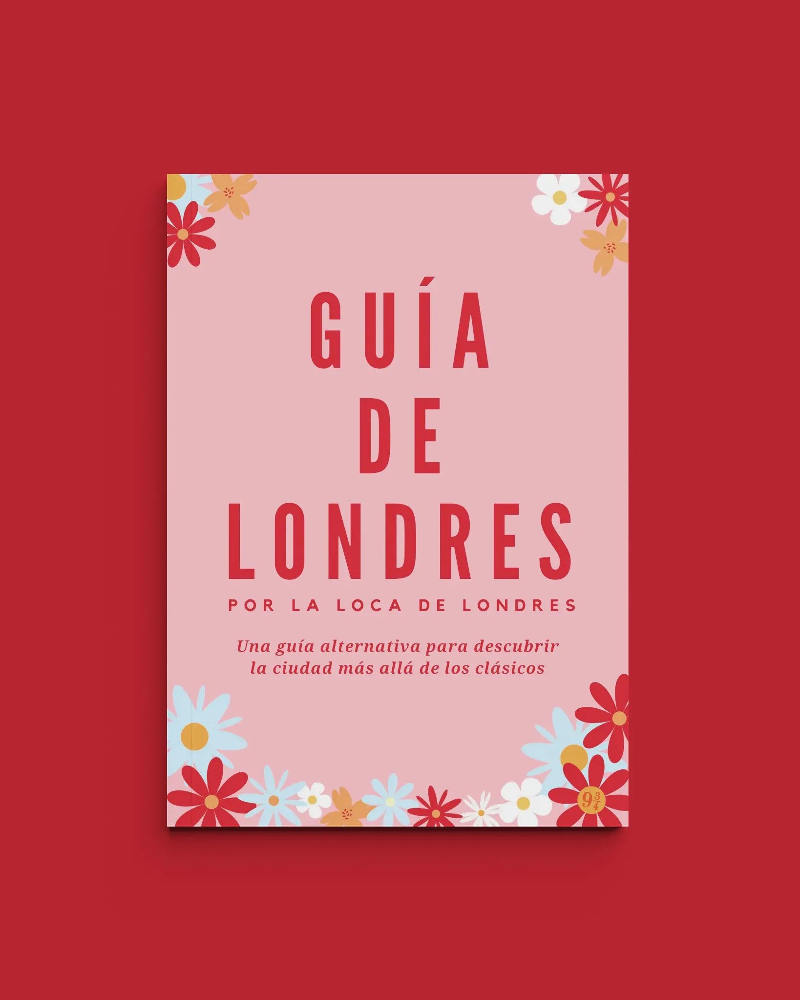
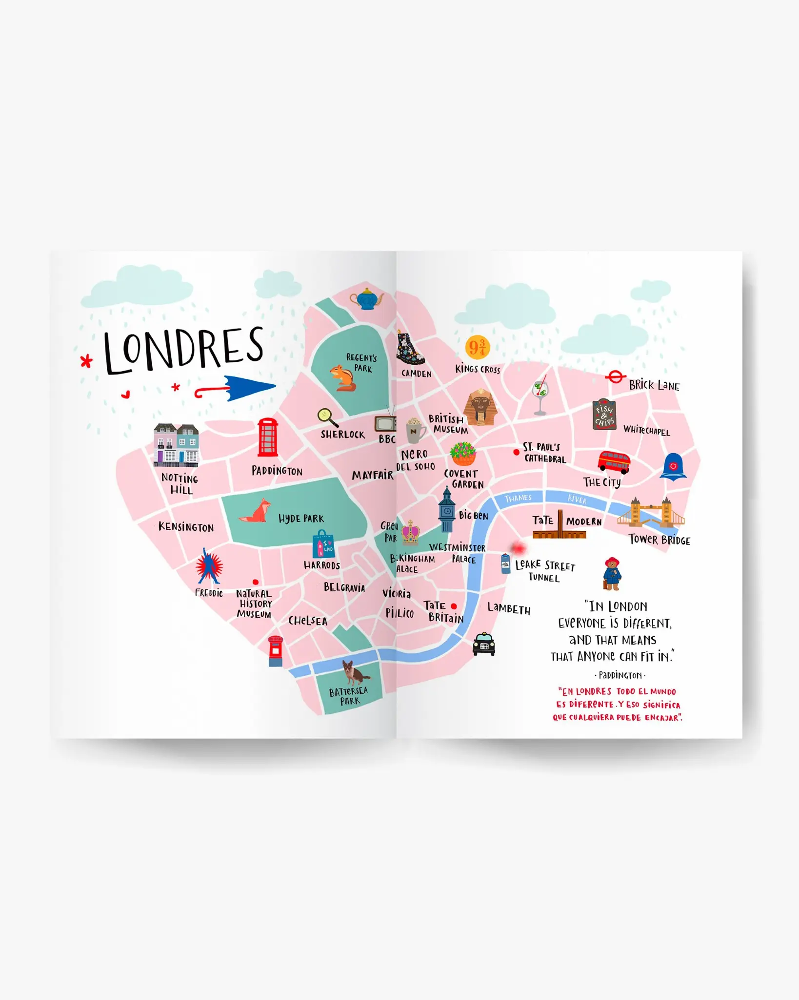
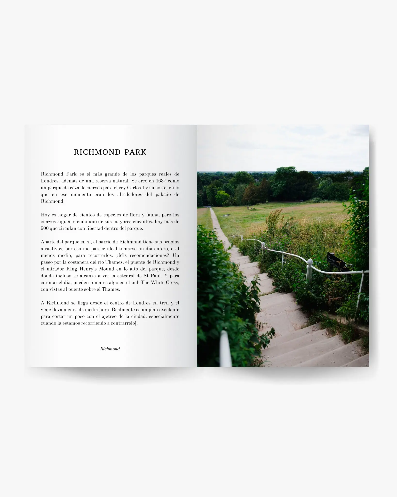
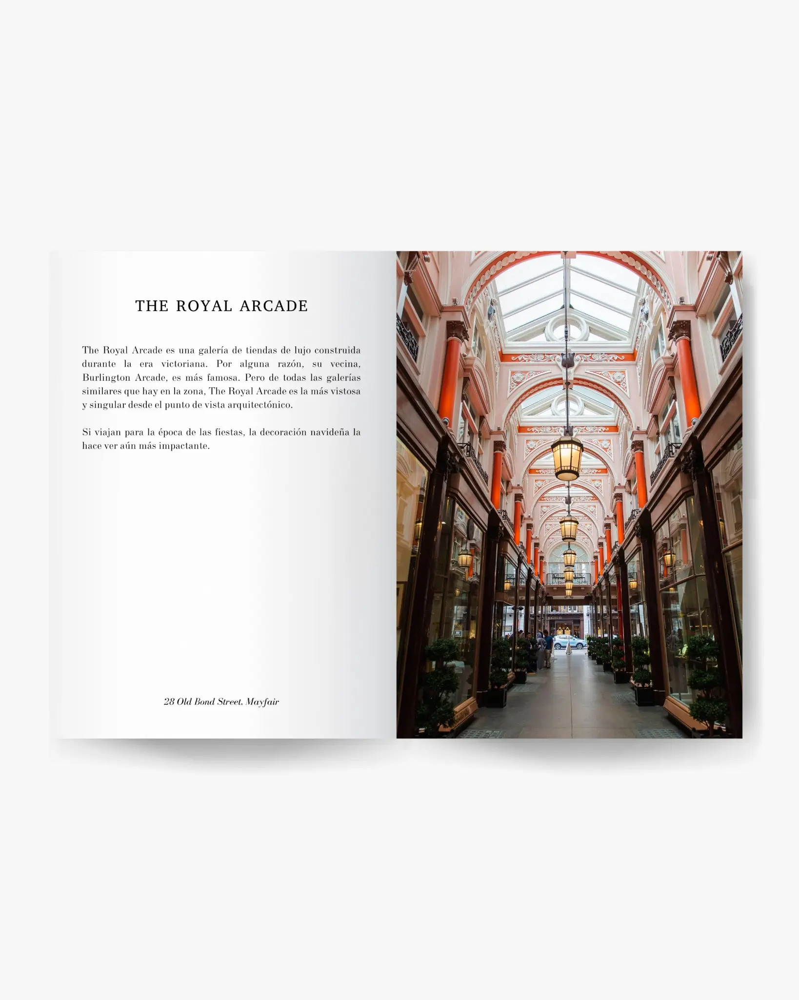
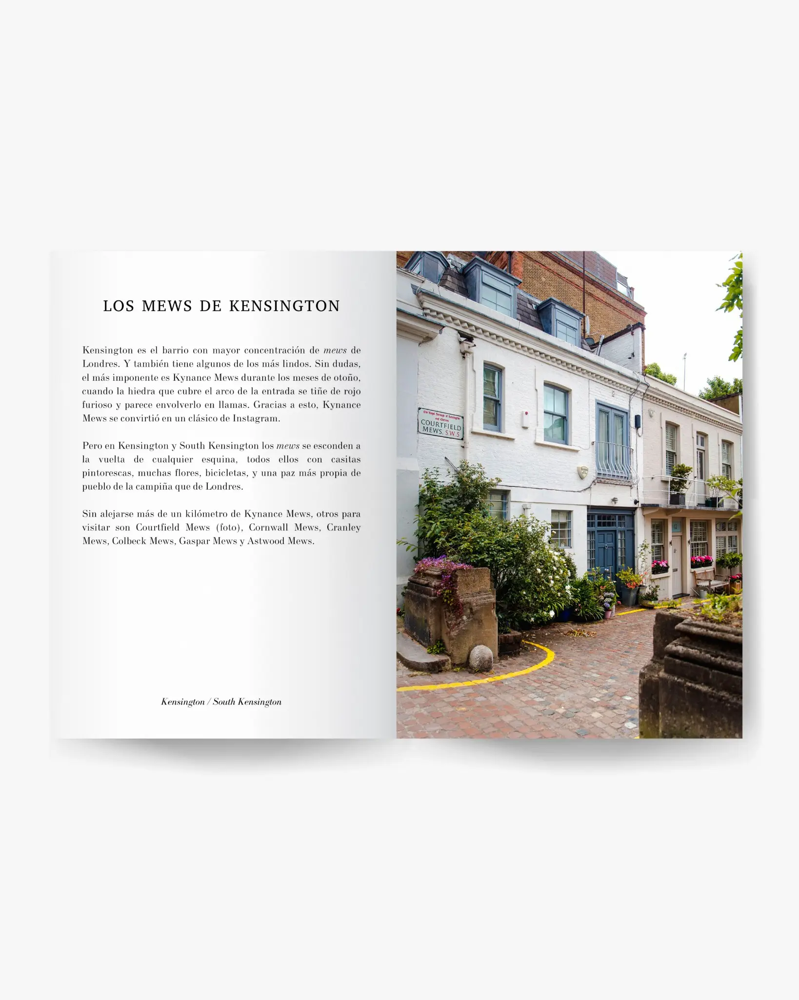
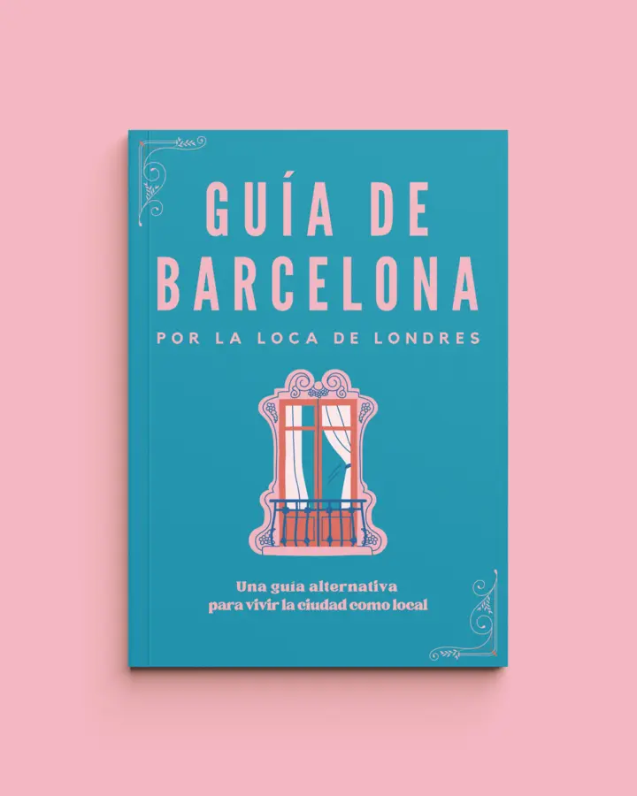
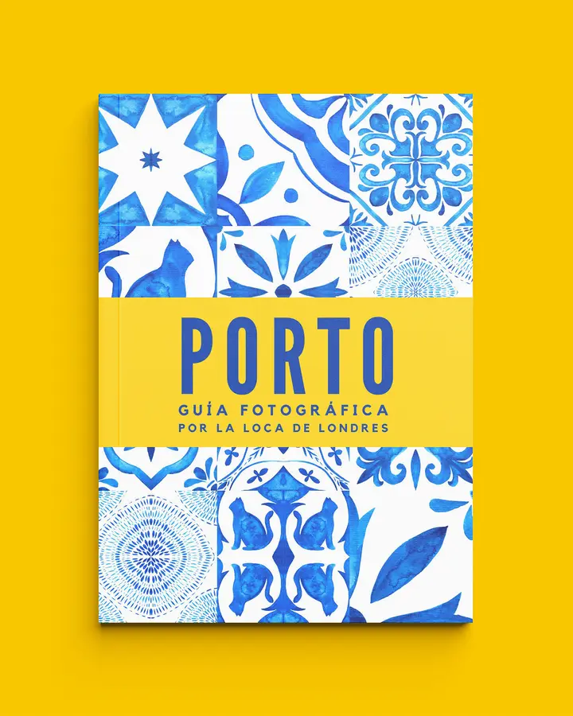
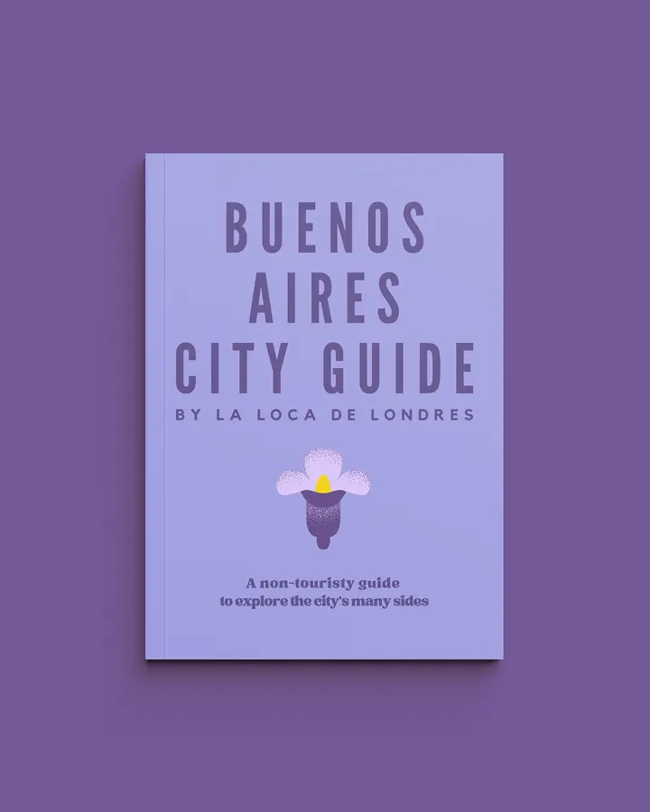
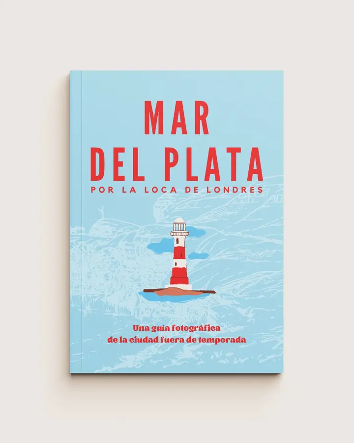

Guía digital · Segunda edición
Londres empieza donde terminan los clásicos.
Una guía alternativa para quienes quieren recorrer la ciudad más allá de lo obvio: callejones pintorescos, mercados, zonas de moda, negocios con historia, escenarios donde se filmaron películas, casas en las que vivieron íconos británicos y toda una sección dedicada a lugares relacionados con el rock.

Otra forma de conocer Londres
Londres puede resultar inabarcable: hay miles de recomendaciones, listas, reels, vlogs, blogs, e “imperdibles” dando vueltas. Esta guía reúne una selección personal construida a lo largo de más de 16 años de viajes a la ciudad, y de toda una vida obsesionada con ella.
Si vas a viajar por primera vez pero te gustaría armar un itinerario original, o si ya conocés la ciudad y estás para algo más que lo obvio, esta guía te va a acompañar a descubrir una Londres menos turística, más original y, sobre todo, a encontrar la tuya.
Qué vas a encontrar
Una selección curada para descubrir la ciudad a tu manera.
- 01
Callejones pintorescos y rincones fuera del circuito
- 02
Mercados, zonas de moda y negocios con historia
- 03
Escenarios de películas y casas de íconos británicos
- 04
Una sección especialmente dedicada al rock
- 05
Fotos e información detallada de cada lugar

Por dentro
Una guía para leer antes del viaje y llevar con vos por Londres.
Fotos, historia y recomendaciones originales en una guía digital de 219 páginas.



Reseñas
Lo que dicen quienes ya leyeron la guía.
“Ya me leí toda tu guía. Si bien vengo investigando hace un tiempo todo sobre Londres, encontré información que no había leído en otra parte. ¡Muy buena!”
“La guía de Londres me sirvió un montón para planear mi viaje. ¡Muchas gracias por hacerla!”
“¡Tu guía de Londres es lo más! Tan clara, tan bien escrita, concreta, precisa... Las otras que también leí no se le acercan ni a los talones”.
Antes de comprar
Preguntas frecuentes
¿En qué formato recibo la guía?
Es un archivo PDF de 219 páginas. Podés leerlo en computadora, tablet o teléfono.
¿Cómo la recibo?
Después de completar la compra, recibís el acceso digital a través de la plataforma de venta.
¿Cómo puedo pagar desde Argentina?
El precio es ARS 12.500 y el pago se procesa mediante Mercado Pago, con las opciones disponibles al momento de la compra.
¿Cómo puedo pagar desde otro país?
El precio internacional es USD 8 y el pago se procesa mediante PayPal. También se aceptan tarjetas Visa, Mastercard y American Express a través de esa plataforma.
¿Es una guía para un primer viaje?
Sí. Es especialmente útil si querés sumar propuestas originales a los clásicos. También está pensada para quienes ya visitaron Londres y buscan descubrir otros lugares.
¿Es un libro físico?
No. Es una guía exclusivamente digital en formato PDF.
Guía de Londres · Segunda edición
Hay tantas Londres como formas de mirarla. Encontrá la tuya.
Mis otras guías



